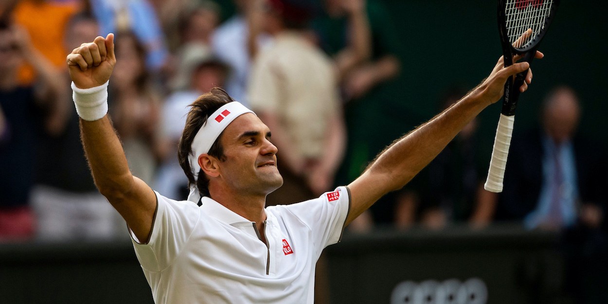
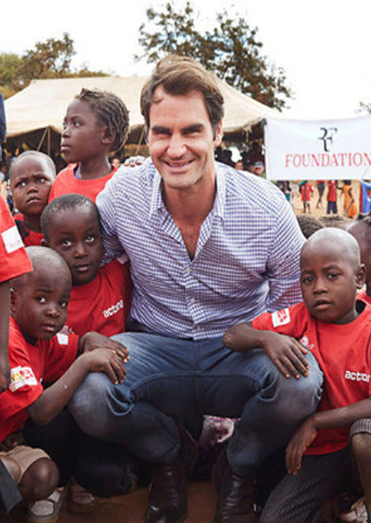
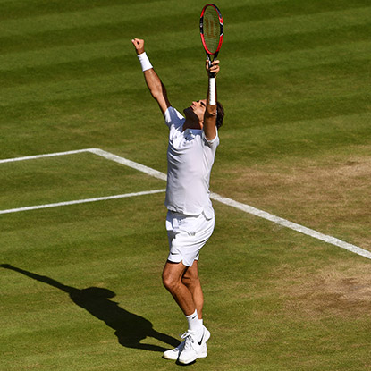
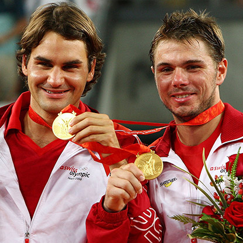
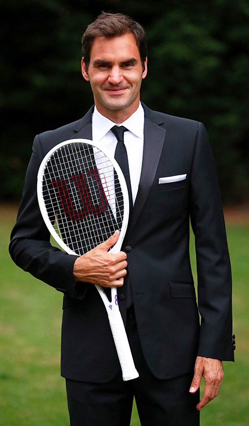
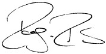

Roger Federer
The greatest tennis player of all time
Profile
Born: 8 August 1981 - Basel, Switzerland
Height: 1,85 m (6 ft 1 in)
Turned pro: 1998
Career Titles: 103
Grand Slam Titles: 20
- Began playing tennis at age 8
- Debuted on the ATP Tour in 1998 as a Wildcard entry in Gstaad
- Mother is Lynette; Father is Robert; has one sister, Diana
- Idols growing up were Stefan Edberg, Boris Becker and Pete Sampras
- Speaks English, German, Swiss German and French
- Married wife, Mirka Vavrinec, in 2009
- Has four children -- two sets of twins -- Myla and Charlene born July 23, 2009 and Leo and Lenny born May 6, 2014
- Founded the Roger Federer Foundation in 2003 which has invested over 28.5 million in educational programs in Africa and Switzerland, reaching out to 650,000 children.

Career
- 1998: As a junior player at Wimbledon, Federer won both the boys' single title and the doubles title (teamed with Olivier Rochus);
- 2001: Won his first single title as a professional tennis player, in Milan;
- 2001: Defeated Pete Sampras at Wimbledon, reaching the quaterfinals;
- 2003: Won his first Grand Slam title at Wimbledon;
- 2004: Imposing dominance. He reached the year-end No. 1 for the first time;
- 2005: Consolidating dominance. He maintained his position as No. 1 for the entire season;
- 2006: Career-best season, won 12 singles titles. Federer reached the finals in an astounding 16 of the 17 tournaments he entered during the season;
- 2007: Reached all four Grand Slam singles finals, winning three of them again. He finished the season as the year-end No. 1 for the fourth year in a row, and during these four years he won 11 Grand Slam singles titles;
- 2008: Olympic Gold with Stan Wawrinka in doubles. Won the fifth USOpen title. Federer suffered from mononucleosis during the first half of the year;
- 2009: Career Grand Slam with the Roland Garros title;
- 2010: Forth Australian Open;
- 2011: Tour Finals title record;
- 2012: Wimbledon title, return to No. 1 and Olympic Silver;
- 2013: Back injuries, fall in rankings;
- 2014: Davis Cup for Team Switzerland;
- 2015: 1,000th victory, Wimbledon and US Open finals;
- 2016: Knee surgery, back injury and long recovery hiatus;
- 2017: Renaissance, Australian Open and Wimbledon titles;
- 2018: 20th Major title at the Australian Open and 310 weeks at No. 1;
- 2019: Hopman Cup record, 100 titles, 1200 match wins, 12th Wimbledon final;
- 2020: Australian Open semis, right knee surgery and hiatus.


Legacy
- Federer has been voted by his peers to receive the tour Sportsmanship Award a record thirteen times and voted by tennis fans to receive the ATP Fans' Favorite award for seventeen consecutive years;
- Federer helped to lead a revival in tennis known by many as the Golden Age. This led to increased interest in the sport, which in turn led to higher revenues for many venues across tennis;
- In 2011, on the Reputation Institute's study of the World's most respected, admired and trusted personalities, Federer ranked No. 2 just behind Nelson Mandela but ahead of Bill Gates, Steve Jobs, Oprah Winfrey and Bono;
- In January 2017, Federer named the Most Marketable Sports Person for 2016 by researchers of London School of Marketing. Federer earned £49.2 million in endorsements and sponsorships;
- On 24 November 2017, Federer received an honorary doctorate awarded to him by his home university, the University of Basel. He received the title in recognition for his role in increasing the international reputation of Basel and Switzerland, and also his engagement for children in Africa through his charitable foundation;
- In December 2019, Federer became the first living person to be celebrated on Swiss coins;
- In December 2019, Roger Federer was voted by the readers as the Most Stylish Man of the Decade (2010–2019) in GQ magazine;
- On 29 May 2020 Federer topped Forbes' 2020 List of the World's Highest Paid Athletes with $106.3 million in total earnings from salary, winnings and endorsements.

“When you do something best in life, you don't really want to give that up and for me, it’s TENNIS.”
